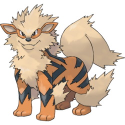

ESTP – The Entrepreneur

You’re an Arcanine!
Personality Overview: ESTPs are energetic, spontaneous, and thrive on action. You’re a natural risk-taker who enjoys living in the moment and diving headfirst into new adventures. People admire your confidence, charm, and fearless attitude.
Strengths
- Adventurous and action-oriented
- Confident and charismatic
- Quick to think on your feet and adapt
Challenges
- May grow bored with routine or long-term planning
- Can act impulsively without considering consequences
- Sometimes struggles with patience or following rules
Why Arcanine?
Arcanine is bold, courageous, and loves to charge into action—just like you. Known for its speed and loyalty, Arcanine represents your adventurous spirit and your tendency to inspire others with your bravery and energy.
Personality Deep Dive
Your dominant trait is Extraverted Sensing (Se), which makes you thrive on excitement and real-world experiences. Your secondary trait, Introverted Thinking (Ti), helps you make quick, logical decisions when needed. You’re at your best when you’re solving problems in the moment and seizing opportunities as they come.
Pokémon Compatibility
You click with other adventurous types who can keep up with your energy, but highly structured or overly cautious personalities might feel limiting to you.
✅ Best Matches
- ESFP – Jigglypuff: Shares your love for fun and adventure, making life exciting together.
- ENFP – Eevee: Curious and spontaneous, they love exploring new experiences with you.
- ESTP – Arcanine (fellow ESTPs): You both understand the thrill of living in the moment.
🔸 Good Potential
- ENTP – Gengar: Clever and playful, they enjoy your bold challenges.
- ISFP – Rapidash: Adventurous but more laid-back, offering balance to your high energy.
- ENFJ – Pikachu: Encouraging and positive, though sometimes wants to slow you down.
⚠️ Tough Matches
- ISTJ – Snorlax: Too steady and routine-focused for your spontaneous lifestyle.
- INTJ – Lucario: May find your impulsiveness frustrating compared to their careful planning.
- ISFJ – Vaporeon: Caring but may feel overwhelmed by your constant need for excitement.
Retake the Quiz